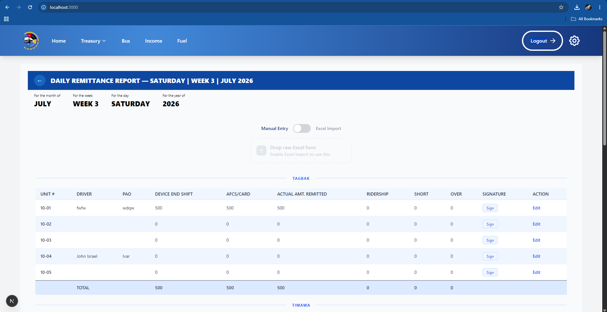
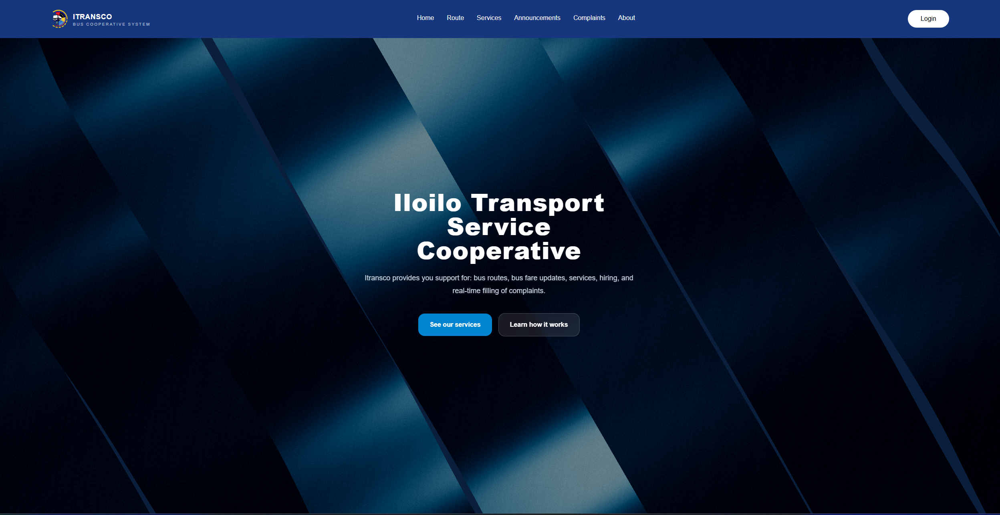

Student • Software Development • IT Project Management
Hi, I’m Kenneth, a future IT professional focused on Software Development.
I am a 3rd-year Information Technology student developing strong skills in project planning, Software Development, problem-solving, and collaboration to support technology-driven outcomes.
- 3rdYear
- 3+Projects
- 100%Growth mindset
About Me
I am a 3rd-year Information Technology student with a growing passion for software development and building user-centered digital solutions. My studies have strengthened my interest in coding, systems thinking, project planning, and creating applications that solve real-world problems.
Beyond development, I value teamwork, research, and clear communication. I enjoy learning new technologies, improving my problem-solving skills, and contributing to projects where I can combine technical execution with practical business and project goals.
Core Strengths
- Project Planning
- Team Collaboration
- Research & Analysis
- Communication
- Problem Solving
Education Background
Bachelor of Science in Information Technology
Major in Software Development
West Visayas State University
- Focused on systems analysis, software development, and project planning.
- Building practical skills in communication, team collaboration, and technical problem-solving.
- Developing knowledge in web technologies, database systems, and IT project execution.
Technical Skills
Featured Projects
-
 Academic Project
Academic ProjectAllin Bets
A personal betting game designed with multiple options, a simple user flow, and a user-friendly interface that demonstrates interactive design and game logic.
-

System DevelopmentITRANSCO Transport & Accounting System
A web-based transport and accounting management solution for a modernized jeepney company, featuring RFID authentication, tracking, and Excel-based reporting for efficient operational management.
-

Web DevelopmentITRANSCO Website
A responsive website for ITRANSCO, showcasing their services and providing an easy-to-navigate platform for users to learn more about the company and its offerings.
Let’s build something meaningful together.
I’m open to collaboration, learning opportunities, and projects where I can contribute my growing skills in IT, teamwork, and digital problem-solving.
Email me Download CV GitHub LinkedIn